Every requirement is a file in your own Git repository. reqochet is the window onto them.
A Windows desktop app that reads a folder of plain Markdown files as a numbered tree, a table and a web of links, and does the Git work for you. It runs offline, with no server and no accounts.
- ---
- id: REQ-K7Q3XMB
- type: system-requirement
- title: Door lock
- status: Approved
- parent: REQ-4NAPSHQ
- order: b1G
- links:
- - type: verifies
- target: REQ-RHE5XZX
- ---
- The door shall lock automatically within 2 s after the vehicle starts moving.
| No. | Title | Type | Status | Links | ID |
|---|---|---|---|---|---|
| 2 | Doors | Heading | REQ-4NAPSHQ | ||
| 2.1 | Door lockThe door shall lock automatically within 2 s after the vehicle starts moving. | SysReq | Approved | 1 out | REQ-K7Q3XMB |
| 2.2 | Window liftThe window shall stop and reverse when it meets an obstacle. | SysReq | Draft | REQ-5V9HAR4 | |
| 2.3 | Check the lock at 10 km/h | Test | Draft | 1 in | REQ-RHE5XZX |
title is the Title column. Point at another line of the file.
Offline.
Everything is on your PC. Open, edit, search and compare on a train; share when you are connected again.
No server.
Nothing to install in a data centre and nothing to keep running. The app talks only to your own Git remote.
No accounts.
Whoever may read or write the repository may read or write the requirements. Your Git host already decides that.
A folder is a document. A file is a requirement.
reqochet works inside the requirements folder of your project's repository and never touches your code. What you see in the window is exactly what is on disk.
- your-project/
- src/ your code, left alone
- requirements/
- System/ a document
- REQ-4NAPSHQ.md
- REQ-K7Q3XMB.md a requirement
- REQ-5V9HAR4.md
- Software/ another document
- REQ-2M9RT4Q.md
- System/ a document
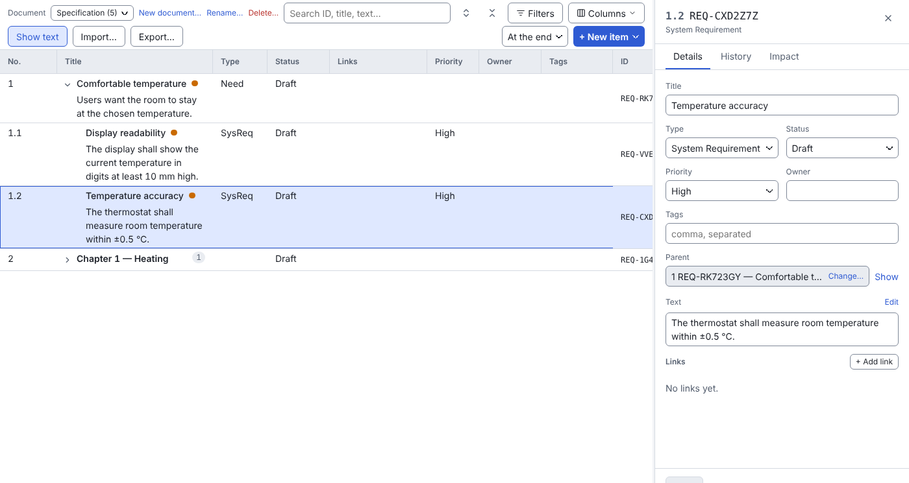
- Numbers are calculatedEach file stores its parent and its place. Outline numbers such as 2.3.1 are worked out when shown, so moving a chapter rewrites nothing else.
- IDs never collideEvery ID is random, so two people, or two branches, never create the same one. An ID never changes.
- Any editor worksThe files are Markdown with a short header. Edit them by hand or with a script; reqochet checks them when it opens and lists what it cannot read.
- Nothing is thrown awayHeader keys reqochet does not know are kept as they are, and every write is checked against the version it was read at.
Git, at the level of a requirement.
Commit, push, pull and branch from inside the window. You review changes requirement by requirement, not line by line, and nobody needs to learn a Git command.
- Save, then commitOn your PC. Only the requirements folder is committed, never your code.
- PushYour commit goes to your Git host.
- A colleague pulls, edits and commitsThey see what changed in each requirement.
- They pushNever forced.
- You pullChanges are combined field by field. You decide only the real clashes.
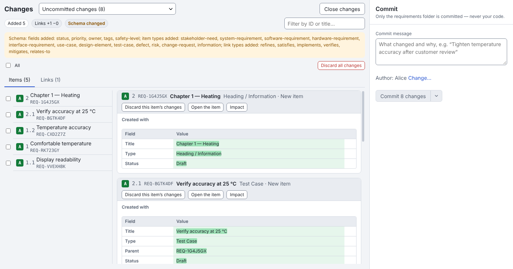
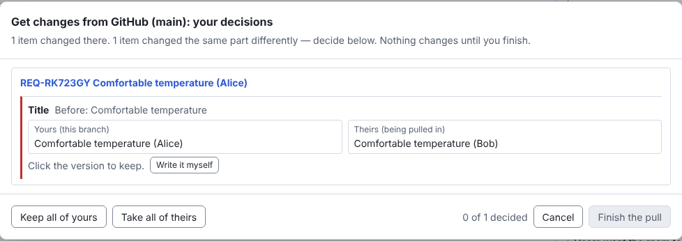
Review before you commit
The Changes view lists every changed requirement with its fields before and after. Undo one field, one requirement, or everything.
A pull asks only what it must
If you and a colleague changed different fields, both changes are kept. Only when you both changed the same field do you choose: yours, theirs, or write it yourself. Nothing changes until you finish.
History and baselines
Each requirement has its own history. Mark a baseline, compare any two versions, and open an old version read-only in the table.
Branches for change requests
Start a separate line of work, see what it would bring in before you take it, and bring it into the main line when it is agreed.
See what is covered, and what a change will touch.
Links are typed, such as verifies or refines, and stored with the requirement they start from. From them reqochet works out coverage, impact and a matrix.
Coverage rules with the gaps marked
Say what must hold, for example that every system requirement is verified by at least one test case. reqochet shows how far you are and marks each gap in the table.
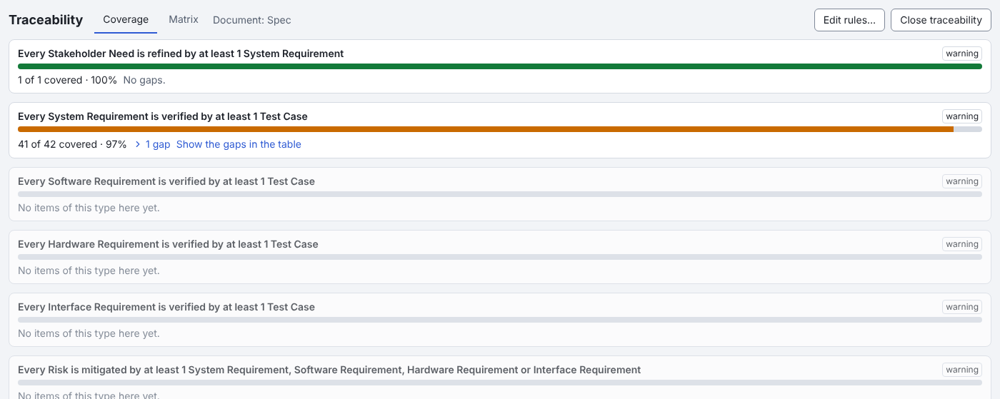
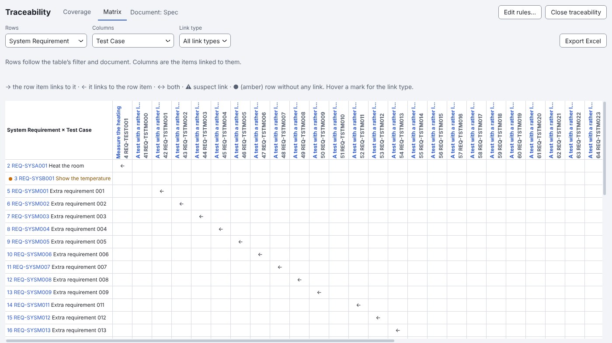
A traceability matrix you can hand over
Pick what goes in the rows and the columns and which link types count. Rows with no link stand out. Export the matrix to Excel for an audit or a review.
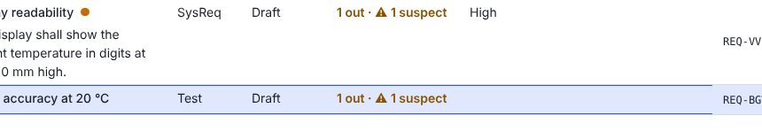
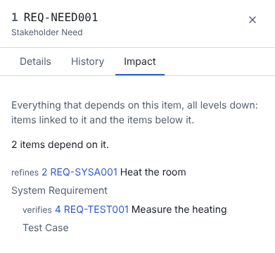
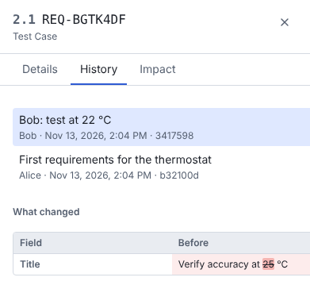
The small things that save an afternoon.
Built for the day-to-day of writing and keeping a specification, not just for storing it.
Write better requirements
Start a sentence from a pattern (When <trigger>, the <system> shall …, a user story), and see gentle hints for vague words, a missing or doubled “shall” and the passive voice. Each type can start with its own text: a new test case already says Steps and Expected result.
Change many at once
Choose rows, set the status, add a tag or change the type for all of them. Duplicate a requirement with the items below it. Bring back an older version of one requirement from its history.
Saved views
Keep a search, filters, sort and columns under a name: just for you, or for the whole team, travelling with the project like everything else.
Keyboard first
One bar above the table, every dialog reachable and closable from the keyboard, Ctrl+Shift shortcuts for new items, filters and the outline.
It gets along with Excel, and with the tools you are leaving.
Start a project from a spreadsheet or from a ReqIF file out of DOORS, Jama or Polarion. Import the same file again later and only the differences come in.
.xlsxExcel, columns matched by name.csvfrom any tool.reqiffrom other requirements tools
.xlsxgrouped by the hierarchy; changes can go back into the original file.reqifhierarchy, fields and links.csvand Markdown as one readable document.docxWord, in your company's own template, with a contents table and a traceability table.pdfand one self-contained web page to read in any browser
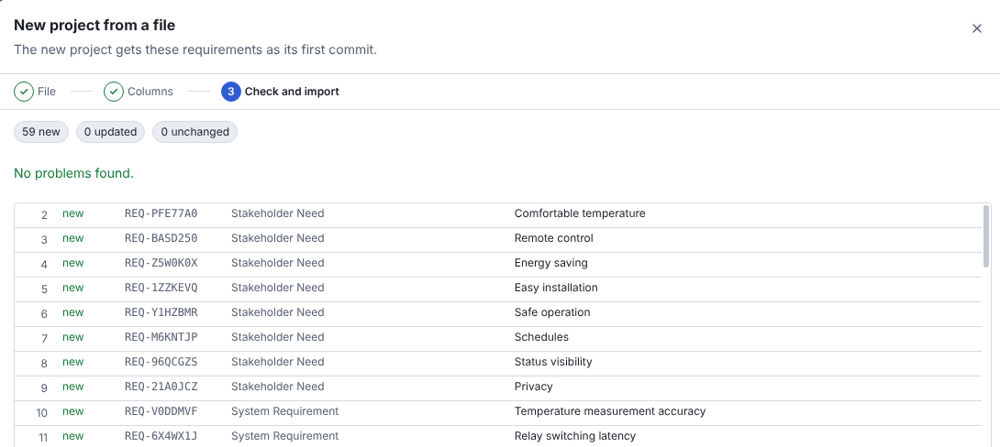
The import shows what is new, updated and unchanged, and any problem, before anything is written.
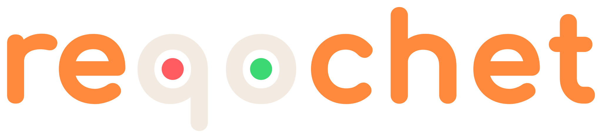
For long evenings, there is Ember.
A third look next to Light and Dark: warm dark colours, orange buttons and edges, serif headings. Or let the window follow Windows. A company can set its own colours in the theme editor inside the app, with a contrast check as you go.
- Light
- Dark
- Ember
- As Windows
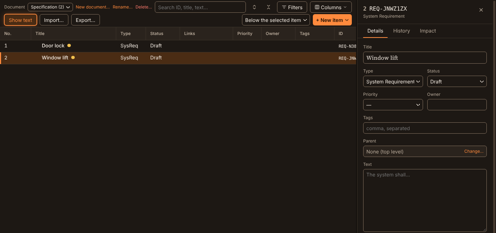
Five languages, and one of them reads right to left.
Switch the window's language in the settings. In Arabic the whole window turns around: table, editor, menus, even the name.
- English
- Deutsch
- Français
- Español
- العربية
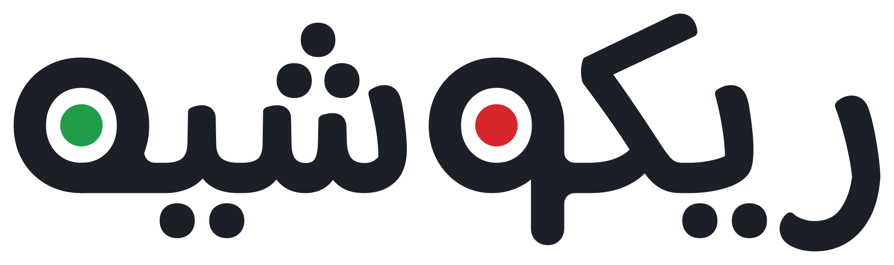
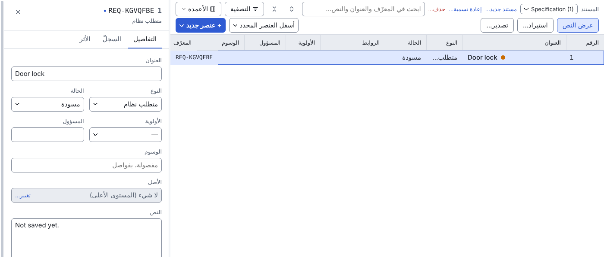
Free to try.
Download the installer, open a folder, write your first requirement. The user guide starts with a 15-minute quick start.
Download for Windows- Windows 11. Installs for your user only, no administrator rights.
- Git for Windows (free) for history and sharing. Without it you can still edit.
- Updates itself. A new version downloads in the background and asks before it restarts.
- Sends nothing to us. No server of ours, no usage statistics, no crash uploads. It talks only to your own Git remote and to GitHub to check for updates (GitHub sees the app version, nothing about your projects).
- Free for everyone, companies included. Licensed under PolyForm Shield 1.0.0; only offering a competing product, free or paid, needs permission. The licence text decides.
Questions people ask first
Do I need a server, a database or an account?
No. The requirements are files in your project's Git repository, and reqochet is a desktop app that reads and writes them. Who may see or change them is decided by your Git host, for example GitHub, exactly as for your code.
What happens when two people change the same requirement?
A pull combines the changes field by field. If you changed the status and a colleague changed the text, both are kept. If you both changed the same field, reqochet shows the two versions and you choose. Nothing is ever force-pushed.
Am I locked in?
No. Each requirement is a Markdown file with a short header you can read in any text editor, and its history is ordinary Git history. You can also export everything to ReqIF, Excel, Word, PDF, CSV or Markdown at any time.
Can it export to Word?
Yes. Word from your company's own template (cover, headers and styles kept, placeholders filled), PDF, and one self-contained web page, each with a contents table and an optional traceability table. Excel, ReqIF, CSV and Markdown too.
What else is in it that people miss?
Edit in Excel and import the same file again: only the changes come in, and changes can go back into your original file. Compare any two versions or branches like a pull request, without a server. A data self-test checks a whole project for broken links, duplicate IDs and files renamed by hand. And an AI prompt in the guides turns a folder of Word specifications into a reqochet project.
We use DOORS or Jama today. Can we bring our requirements?
Yes, through ReqIF, the exchange format those tools write, or through Excel and CSV. The import keeps the hierarchy, the fields and the links, and shows you what it will do before it writes anything.
Windows warns me about the installer. Why?
The installer is not code-signed yet, so Windows may say it protected your PC. Choose More info, then Run anyway. A zip of the same installer is offered for browsers that block .exe files.
What does it cost?
Nothing, for teams and companies alike. reqochet is licensed under PolyForm Shield 1.0.0: you may use it, change it and share it for any purpose except offering a product, free or paid, that competes with it. The licence text decides.